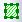

Nach dem Import einer NetCDF-Datei in den Matrixstapel können Sie die Matrixdaten bearbeiten.
Im Folgenden sehen Sie einige Beispiele zur Verwendung dieser Hilfsmittel auf NetCDF-Daten.
Wählen Sie Analyse: Lineare Anpassung für Matrixstapel, um den Dialog zu öffnen. Führen Sie eine lineare Anpassung für den NetCDF-Matrixstapel durch.
Wählen Sie Analyse: Deskriptive Statistik, um den Dialog zu öffnen und die deskriptive Statistik (Mittelwert, Standardabweichung, Minimum, Maximum, Median und Summe) für den Matrixstapel zu erhalten.

Wählen Sie Analyse: Mathematik: Subtrahieren, um den Dialog zu öffnen, und subtrahieren Sie zwei Matrixstapeln der gleichen Größe, um die Differenz zwischen diesen beiden zu erhalten.
In der folgenden Abbildung erhalten wir den Mittelwert der Matrix und führen dann die Subtraktion mit den Mittelwerten der zwei Matrizen, um die Differenz zu berechnen.
Anwenderbericht:
Wählen Sie Matrix: Pixelextraktion, um den Dialog zu öffnen, und extrahieren Sie den Z-Wert für festgelegte XY-Koordinaten für alle Matrizen in einem Matrixstapel.
Zum Festlegen des XY-Koordinatenwertes können Sie:
oder
oder
Wählen Sie Matrix: Größe ändern, um den Dialog msresize zu öffnen. Wählen Sie Interpolieren unter Option Größe ändern, um ausführlichere Informationen aus den NC-Dateien zu erhalten.
Wenn eine Matrix im Bildmodus ist, können Sie mit dem Hilfsmittel Rechteck/Kreis/Polygon/Region  einen Bereich als Region-of-Interest (ROI) auswählen und dann Daten aus ihm extrahieren.
Klicken Sie mit der rechten Maustaste auf Ihr ROI und wählen Sie im Kontextmenü eine Option. Um die ROI zu verwerfen, drücken Sie Entfernen.

Um mehrere ROIs hinzuzufügen:
Jedes ROI wird mit einem Standardnamen hinzugefügt (z. B. ROI). Sie können mehrere ROIs zu Ihrem Matrixbild hinzufügen, müssen aber jedes ROI umbenennen, bevor Sie ein weiteres hinzufügen können.
Kopieren Sie die ausgewählte Position der ROI (grafischen Datenauswahl). Fügen Sie dann die Position der ausgewählten ROI in eine andere ROI ein (Breite, Höhe, ... alles).
Speichern Sie die ROI-Objekte.
Ersetzen Sie das/die Objekt(e) mit denen in einer gespeicherten .ROI-Datei (Hinweis: Erstellen Sie eine "Dummy"-ROI zum Importieren).

Fügen Sie die ROI zur Matrix hinzu, klicken Sie mit der rechten Maustaste auf die ROI in der Matrix, wählen Sie ROI aus XY erstellen. Mit dem Hilfsmittel xy2roi zum Importieren der XY-Daten im Arbeitsblatt definieren Sie die ROI.
Es gibt zum Beispiel einen Datensatz aus Shapefiles, den Sie in die NetCDF-Matrix importieren können.
Verwenden Sie das Hilfsmittel mroi2mat, um eine neue Matrix aus der ROI zu erzeugen.
Verwenden Sie das Hilfsmittel mroi2XYZ, um ein neues Arbeitsblatt mit XYZ-Werten in der ROI zu erzeugen.
Verwenden Sie das Hilfsmittel mroiprofile, um den Wert der deskriptiven Statistik (Mittelwert, Standardabweichung, Minimum, Maximum, Median, Summe, XY von Minimum und XY von Maximum) für das ROI-Feld zu erzeugen. Der Dialog Intensitätsprofil erhält das Kontrollkästchen Gewichtetes ROI. Wenn diese Option aktiviert ist, wird jedes Pixel von der Schnittfläche von Pixelrechteck und Polygon des ROI gewichtete. Dies dient der Verbesserung der Ergebnisse, wenn die ROI-Koordinaten ein Pixel nicht vollständig abdecken.
Beispiel: Nach dem Hinzufügen eines Shapefiles-Datensatzes als ROI (Hilfsmittel ROI aus XY erstellen) können Sie das Hilfsmittel Intensitätsprofil verwenden, um den ROI-Datensatz zu analysieren.
Lesen Sie weitere Informationen zur X-Funktion Mroiprofile, um mehr über diesen Dialog zu erfahren.
|
Ein Geschwindigkeitsproblem kann auftreten, wenn viele ROI-Felder existieren, Profil für = Alle ROIs in Matrix und Datenlayout = Matrix zeilenweise. Die Langsamkeit wird durch das Bewahren der Ausgabespalten der Berichtsdaten verursacht. In diesen Fällen wird die Ausgabe einfach aus allen ursprünglichen Spalten entfernt, falls die ursprüngliche Ausgabe eine größere Anzahl von Spalten als @RDRC besitzt. Es sollte jedoch beachtet werden, dass das Entfernen aller Ausgabespalten auch Zeichnungen beschädigt, die auf Grundlage der Ausgabe erstellt wurden. |
Fügen Sie ein ROI-Feld zur Matrix hinzu, klicken Sie mit der rechten Maustaste auf das ROI und wählen Sie Löschen.
Bei 4D-Matrixmappen (die 4. Dimension ist Blätter) wird das einzelne ROI übergreifend über mehrere Matrixblätter angezeigt. Das ROI wird im aktiven Blatt angezeigt.
Für dieses ROI werden die Hilfsmittel Neu erstellen, XYZ extrahieren und Intensitätsprofil unterstützt. Das Ergebnis des aktiven Matrixblatts wird erzeugt. Bei einem Wechsel der Blätter wird das Ergebnis für das aktive Blatt aktualisiert.